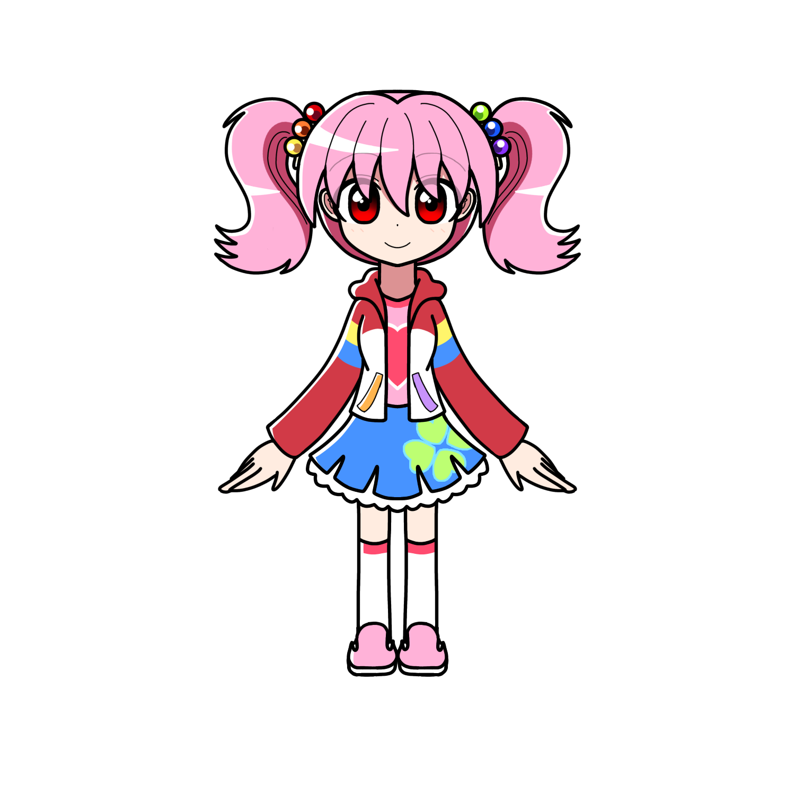

虹坂 アリス
アリス（そうだ、魔法使えば良くない？） 
虹坂アリス（ニジサカ アリス）とは
プリズムアミュレットに登場する主人公の一人である。
概要
サイオジュエルは薄ピンク色の球。
幼い頃のアリスは当時それを「きれいなビー玉」と認識し、彼女なりに大切にしていた。
プロフィール
| 種族 | ドール |
|---|---|
| 性別 | 女性 |
| 年齢 | 15歳 |
| 誕生日 | 4月10日 |
| 身長 | 150cm |
| 血液型 | O型 |
| 出身 | カロトゥンシティ |
| イメージカラー | ピンク（赤） |
| イメージCV | 悠木碧 |
人物像
外見
薄いピンク色のツインテール。 先っぽがウェーブがかっている。 瞳が赤い。 カラフルでポップなカジュアルな服装を好んで着ている。 ハートや星形のマークが付いている服も好き。
性格
基本的に明るく自由奔放な性格。 喜怒哀楽が激しく気分屋。 その時の気分次第でテンションがコロコロと変わる。
かなり大雑把で面倒くさがり。どこかがさつなところもある。
他人には寛容かつ無関心なところがあり、誰かに深く寄り添うことを 苦手としている。
漫画やアニメ、ゲームが大好き。強いて言うならアニメより漫画派。 ゲームはストレスフリーなものを好むため、対人戦や高難易度のものはやらない。 『マジカル☆ハピネスタ』という自作の魔法少女漫画を作っているが、 驚くほど王道かつ陳腐な作風。ちなみに魔法少女ものコンテンツが大好きで、 その理由は「『魔法』と『少女』という組み合わせがたまらなく好き」だからだそう。 魔法少女ものであればその詳細ジャンルは問わないそう。
カラフルでポップな物を好む。 服装もかわいいパステルカラーの物を着ている。 この服装を外野が「子供っぽくてダサい」と言ったのを聞いた際には「そんな考えもあるのか」と感心してしまった。
頻繁に物を忘れる。外に行っては何度も忘れ物を取りに 部屋に戻る。 学校での成績はかなり下の方。しかし音楽の成績のみは安定して好成績。軽度の相貌失認で、例え仲の良い人でも髪型・髪色、服装などが変わってしまったら区別がつかなくなる。
かなりの偏食家。傾向として甘い食べ物や塩辛い食べ物を好む。肉が大好きで、一番好きなのはデミグラスハンバーグ。 好きな魚は鮭と鯵だが基本的にはどれも好き（しかし生魚は好きではなく、寿司も海鮮丼も嫌い。寿司を食べなければならない場合は中トロと玉子を食べる）。酸っぱいものが特に苦手。その中でもマヨネーズが特に嫌いで少しでも入っているとすぐ吐いてしまうほど。フルーツは食べられなくはないものの、少量で済ます。 かなりの野菜嫌い。火を通し柔らかくなればキャベツと人参、玉ねぎなどは食べられる。
口調
一人称は基本的に「わたし」。 しかし、一人称は気分やその場のノリでコロコロ変わる。 基本的に中性的な口調で話す。
能力
呪文は「パヴリルパウララマジカリーナ」 固有魔法は、表向きには「物を出す魔法」だと本人は認識しているが、その真の固有魔法は……。
ステッキを使ってプリズムパワーを使う。 アリスはそれを「ハピネスハートステッキ」と名付けたが、 現在は単に「ステッキ」と呼ばれることが多い。